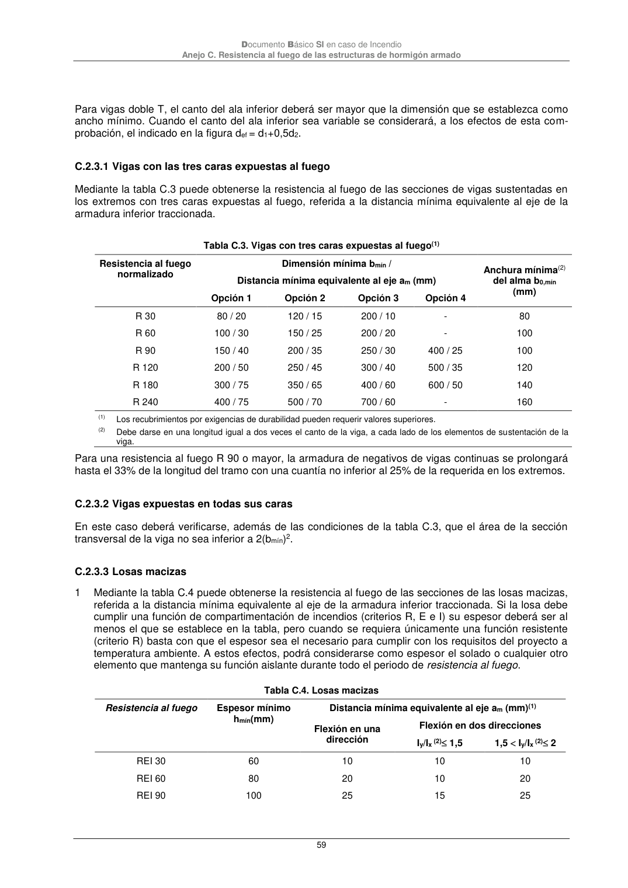

DB-SI Seguridad en caso de incendio · edición 2025-03-04 · capa oficial
Documento DB-SI-oficial · SHA-256 del PDF 0a2e78cd62471d9cc5cfe2efbc6aa39fdbad73c124aea7b039f9de96c141e105
Página física 59 de 92.
Copia fiel del PDF fuente · Fuente oficial
Ficha de la disposición en la fuente oficial
Formato: Texto de la página (Markdown)
Documento Básico SI en caso de Incendio Anejo C. Resistencia al fuego de las estructuras de hormigón armado 59 Para vigas doble T, el canto del ala inferior deberá ser mayor que la dimensión que se establezca como ancho mínimo. Cuando el canto del ala inferior sea variable se considerará, a los efectos de esta com- probación, el indicado en la figura def = d1+0,5d2. C.2.3.1 Vigas con las tres caras expuestas al fuego Mediante la tabla C.3 puede obtenerse la resistencia al fuego de las secciones de vigas sustentadas en los extremos con tres caras expuestas al fuego, referida a la distancia mínima equivalente al eje de la armadura inferior traccionada. Tabla C.3. Vigas con tres caras expuestas al fuego(1) Resistencia al fuego normalizado Dimensión mínima bmín / Distancia mínima equivalente al eje am (mm) Anchura mínima(2) del alma b0,mín (mm) Opción 1 Opción 2 Opción 3 Opción 4 R 30 80 / 20 120 / 15 200 / 10 - 80 R 60 100 / 30 150 / 25 200 / 20 - 100 R 90 150 / 40 200 / 35 250 / 30 400 / 25 100 R 120 200 / 50 250 / 45 300 / 40 500 / 35 120 R 180 300 / 75 350 / 65 400 / 60 600 / 50 140 R 240 400 / 75 500 / 70 700 / 60 - 160 (1) Los recubrimientos por exigencias de durabilidad pueden requerir valores superiores. (2) Debe darse en una longitud igual a dos veces el canto de la viga, a cada lado de los elementos de sustentación de la viga. Para una resistencia al fuego R 90 o mayor, la armadura de negativos de vigas continuas se prolongará hasta el 33% de la longitud del tramo con una cuantía no inferior al 25% de la requerida en los extremos. C.2.3.2 Vigas expuestas en todas sus caras En este caso deberá verificarse, además de las condiciones de la tabla C.3, que el área de la sección transversal de la viga no sea inferior a 2(bmín)2. C.2.3.3 Losas macizas 1 Mediante la tabla C.4 puede obtenerse la resistencia al fuego de las secciones de las losas macizas, referida a la distancia mínima equivalente al eje de la armadura inferior traccionada. Si la losa debe cumplir una función de compartimentación de incendios (criterios R, E e I) su espesor deberá ser al menos el que se establece en la tabla, pero cuando se requiera únicamente una función resistente (criterio R) basta con que el espesor sea el necesario para cumplir con los requisitos del proyecto a temperatura ambiente. A estos efectos, podrá considerarse como espesor el solado o cualquier otro elemento que mantenga su función aislante durante todo el periodo de resistencia al fuego. Tabla C.4. Losas macizas Resistencia al fuego Espesor mínimo hmín(mm) Distancia mínima equivalente al eje am (mm)(1) Flexión en una dirección Flexión en dos direcciones Iy/Ix (2) 1,5 1,5 Iy/Ix (2) 2 REI 30 60 10 10 10 REI 60 80 20 10 20 REI 90 100 25 15 25
